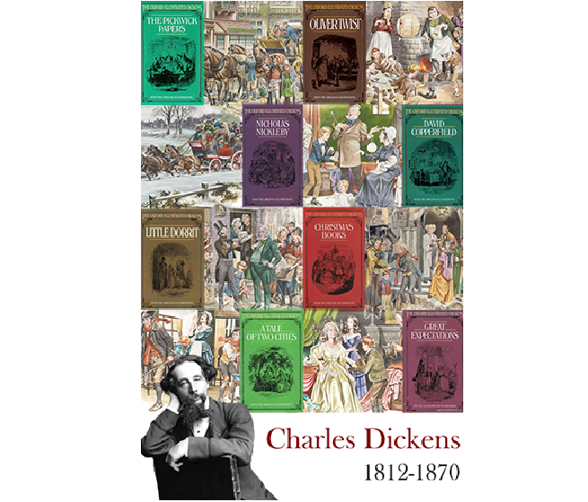

I traced a stock image of marbles using Adobe Illustrator. I wanted to see how my skills have improved after I took my graphics design class, so I decided to recreate the image of marbles. The original image was also very pixelated, so by recreating it on Illustrator, it made the image clearer and cleaner.
This was a project in my graphic design course. We had to create a poster for an event on a subject who has left a legacy, and I chose Charles Dickens because of his great collection of written books. This project required us to blend images together in Adobe Photoshop and transfer it over to Adobe Illustrator where we would add in the text.

This was a project in my graphic design course, and we had to use Adobe Photoshop to create a poster that showed the legacy that was left behind by someone. I chose Charles Dickens and the novels that he wrote. The only text we could use was their name and the years they lived. I chose to add the illustrations that would show others the main idea of each of his books.